ABOUT ME
Meet Anton Holovyn, your go-to WordPress web
developer! With a passion for crafting captivating online
experiences, I combine creativity and technical expertise to
bring your vision to life. With years of hands-on experience in
designing and developing custom WordPress websites, I have the
know-how to create functional, responsive, and visually stunning
websites that leave a lasting impression.
Equipped with an in-depth understanding of the latest web technologies and best practices, I am committed to delivering top-notch solutions tailored to your unique needs. From eye-catching themes and seamless navigation to optimized performance and user-friendly interfaces, I ensure that every aspect of your WordPress site is meticulously crafted for success.
Equipped with an in-depth understanding of the latest web technologies and best practices, I am committed to delivering top-notch solutions tailored to your unique needs. From eye-catching themes and seamless navigation to optimized performance and user-friendly interfaces, I ensure that every aspect of your WordPress site is meticulously crafted for success.
Whether you need a brand new website, a revamp of your existing
one, or ongoing maintenance and support, I am your dedicated
partner in the ever-evolving digital landscape. Collaborative,
reliable, and deadline-driven, I am ready to take your WordPress
project to the next level.
Let me be the architect of your online presence, and watch your ideas materialize into a stunning reality. Get in touch today and embark on an exciting journey to elevate your online presence with a WordPress web developer who truly understands your goals.
Let me be the architect of your online presence, and watch your ideas materialize into a stunning reality. Get in touch today and embark on an exciting journey to elevate your online presence with a WordPress web developer who truly understands your goals.
TECHNOLOGIES I USE


 1.png)
ADDITIONALLY
IF YOU DO NOT HAVE A READY DESIGN, THEN I CAN PROVIDE SUCH A SERVICE
University of Warsaw botanical garden
Explore the University of Warsaw Botanical Garden's website to discover a diverse collection of plants, educational resources and upcoming events.
Loading . . .